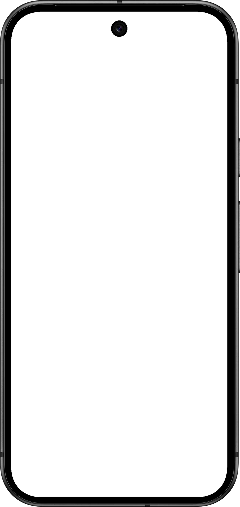

01
Sites e apps
Sites / Apps / Agendamento
Do primeiro toque à próxima ação.
Interfaces claras que levam o visitante a agendar, pedir ou comprar.

Ateliê Exemplo
Agende sua visita
Outubro
Ter27Qua28Qui29Sex30
Horários
09:0010:3014:0016:30
Confirmar visita